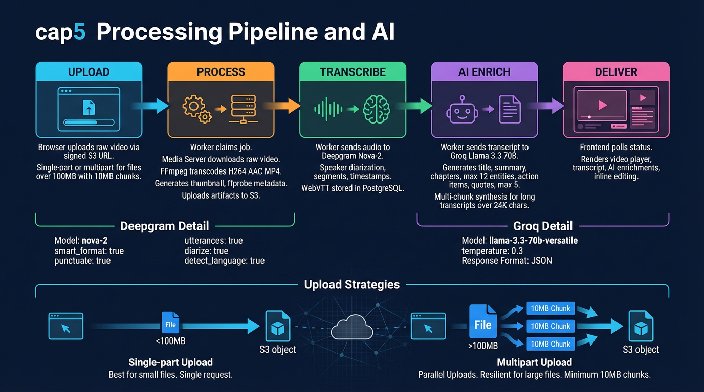

Validate — confirm videoId is UUID format
Download — stream raw upload from S3 to /tmp/cap5-media/<videoId>/
Transcode — FFmpeg: H.264 veryfast, yuv420p, faststart, AAC 128k
Thumbnail — FFmpeg thumbnail filter, single best frame
Probe — ffprobe extracts duration, dimensions, FPS, audio presence
Upload — result MP4 + thumbnail to S3, cleanup temp files
Model: Nova-2 (configurable via DEEPGRAM_MODEL)
Features: smart_format, punctuate, utterances, diarize, detect_language
Output: segments with { startSeconds, endSeconds, text, confidence, speaker }
Storage: segments_json + speaker_labels_json in transcripts table, VTT file in S3
Fallback: extracts audio via FFmpeg first; falls back to full video if needed
Model: Llama 3.3 70B Versatile (configurable via GROQ_MODEL)
Temperature: 0.3 — factual, low-creativity extraction
Response format: JSON object (structured output)
Multi-chunk: transcripts >24K chars split by paragraph boundaries
Synthesis: chunks processed individually, then combined via additional call
| Field | Description | Constraints |
|---|---|---|
| title | Auto-generated descriptive title from transcript content | Single string |
| summary | Concise overview of the video content | Single string |
| key_points | Main takeaways from the discussion | Array of strings |
| chapters | Timestamped topic segments with titles | Max 12, deduped within 30s intervals |
| entities | Named people, orgs, tools, concepts mentioned | Set-deduplicated across chunks |
| action_items | Tasks, assignments, or follow-ups identified | Array with assignee/deadline fields |
| quotes | Notable verbatim quotes from speakers | Max 5 per video |
POST /api/videos — create video + uploads row
POST /api/uploads/signed — get presigned PUT URL
PUT to signed URL — XHR upload with progress
POST /api/uploads/complete — queues process_video
POST /api/uploads/multipart/initiate — start session
POST /api/uploads/multipart/presign-part — per 10MB chunk
PUT each chunk — sequential upload with ETag tracking
POST /api/uploads/multipart/complete — ETags array, queues job

Infographic will appear here once generated